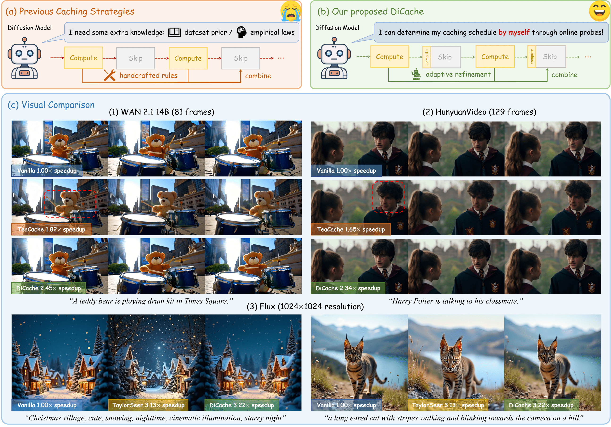

🚀DiCache: Let Diffusion Model Determine Its Own Cache

Recent years have witnessed the rapid development of acceleration techniques for diffusion models, especially caching-based acceleration methods. These studies seek to answer two fundamental questions: "When to cache" and "How to use cache", typically relying on predefined empirical laws or dataset-level priors to determine the timing of caching and utilizing handcrafted rules for leveraging multi-step caches. However, given the highly dynamic nature of the diffusion process, they often exhibit limited generalizability and fail on outlier samples. In this paper, a strong correlation is revealed between the variation patterns of the shallow-layer feature differences in the diffusion model and those of final model outputs. Moreover, we have observed that the features from different model layers form similar trajectories. Based on these observations, we present DiCache, a novel training-free adaptive caching strategy for accelerating diffusion models at runtime, answering both when and how to cache within a unified framework. Specifically, DiCache is composed of two principal components: (1) Online Probe Profiling Scheme leverages a shallow-layer online probe to obtain a stable prior for the caching error in real time, enabling the model to autonomously determine caching schedules. (2) Dynamic Cache Trajectory Alignment combines multi-step caches based on shallow-layer probe feature trajectory to better approximate the current feature, facilitating higher visual quality. Extensive experiments validate DiCache's capability in achieving higher efficiency and improved visual fidelity over state-of-the-art methods on various leading diffusion models including WAN 2.1, HunyuanVideo for video generation, and Flux for image generation. Our code is available at DiCache Repo.
HiFlow constructs reference flow from low-resolution sampling trajectory to offer initiation alignment, direction alignment, and acceleration alignment, enabling flow-aligned high-resolution image generation. Specifically, HiFlow involves a cascade generation paradigm: First, a virtual reference flow is constructed in the high-resolution space based on the step-wise estimated clean samples of the low-resolution sampling flow. Then, during high-resolution synthesizing, the reference flow offers guidance from sampling initialization, denoising direction, and moving acceleration, aiding in achieving consistent low-frequency patterns, preserving structural features, and maintaining high-fidelity details.
Image qualitative comparisons with other baselines. HiFlow yields high-resolution images characterized by high-fidelity details and coherent structure.

Image qualitative comparisons with training-based methods. HiFlow demonstrates the capability to generate high-resolution images with quality comparable to leading training-based models (UltraPixel, Diffusion-4K).

Here we demonstrate our results for more applications including LoRA, ControlNet, and Quantization. Additionally, we showcase our results on SDXL, a U-Net based T2I diffusion model.

If you find this work helpful, please cite the following paper:
@article{bu2025dicache,
title={DiCache: Let Diffusion Model Determine Its Own Cache},
author={Bu, Jiazi and Ling, Pengyang and Zhou, Yujie and Wang, Yibin and Zang, Yuhang and Wu, Tong and Lin, Dahua and Wang, Jiaqi},
journal={arXiv preprint arXiv:2508.17356},
year={2025}
}
Project page template is borrowed from FreeScale.